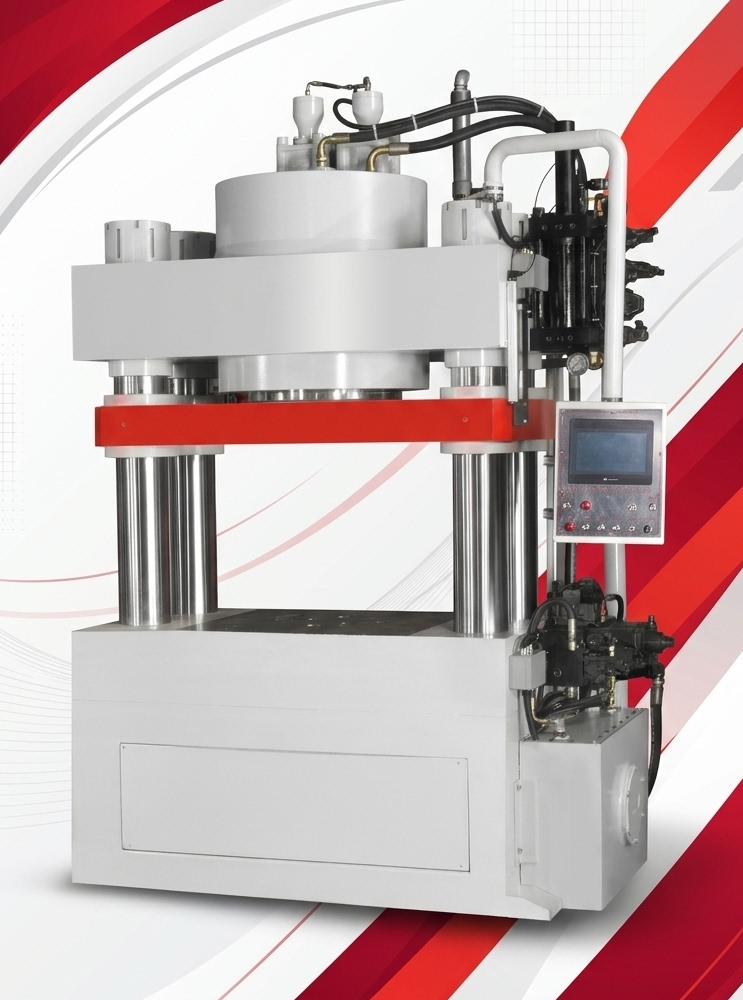
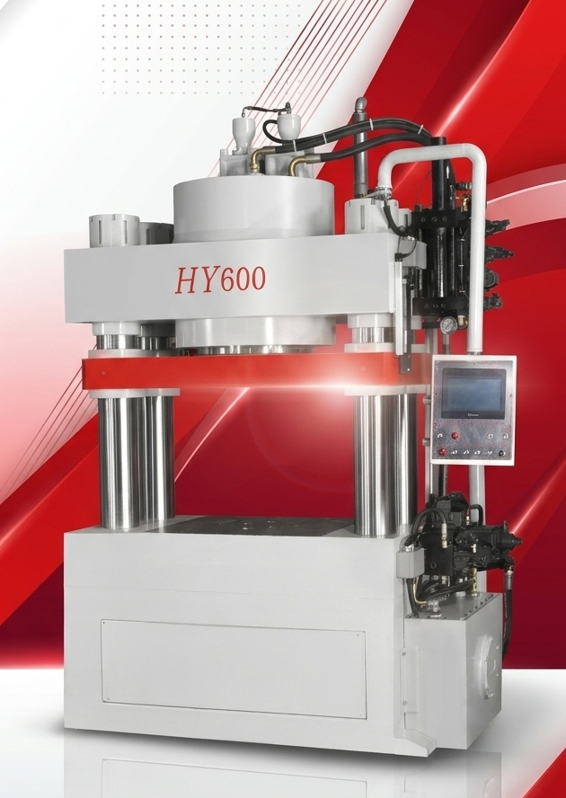
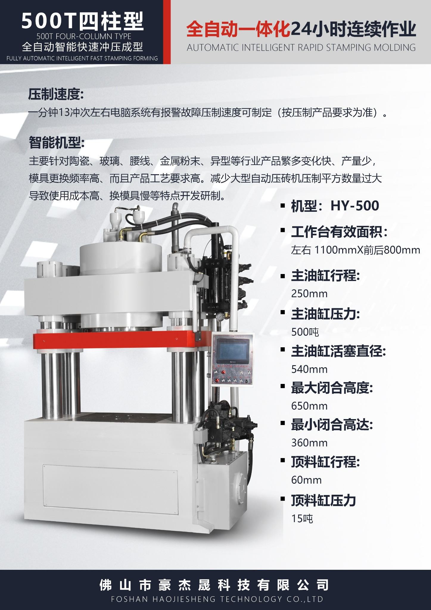
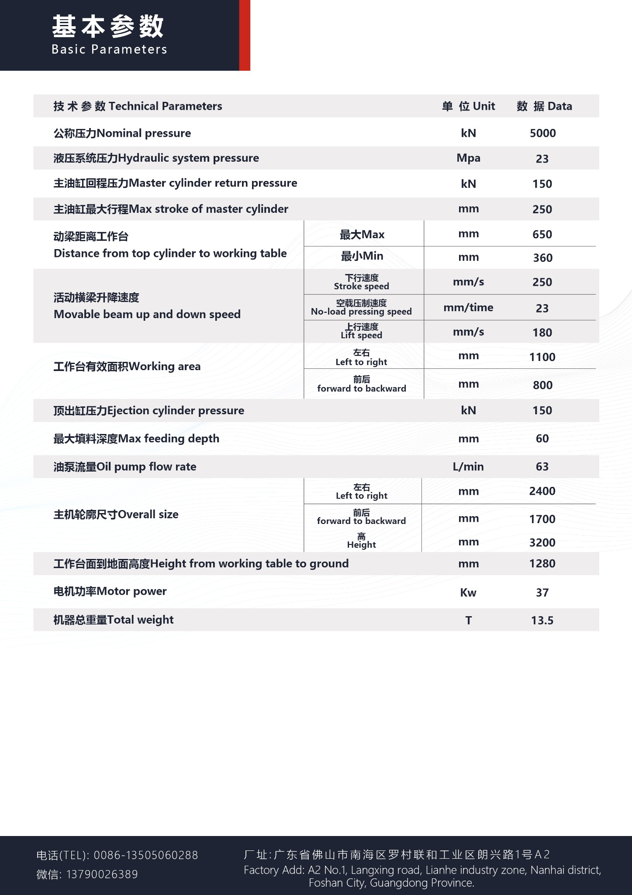
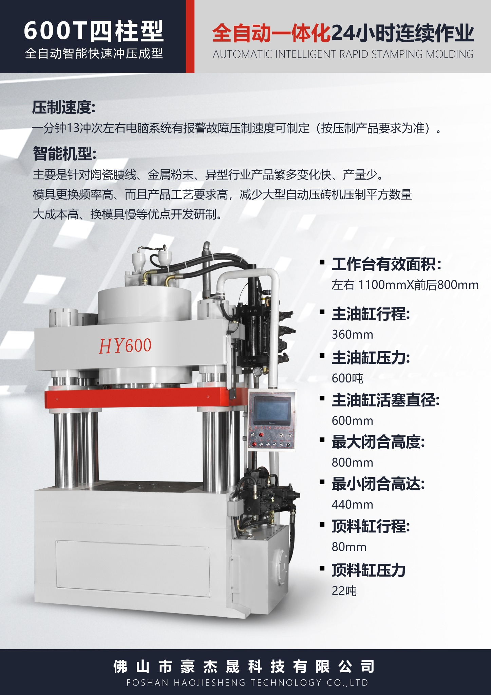
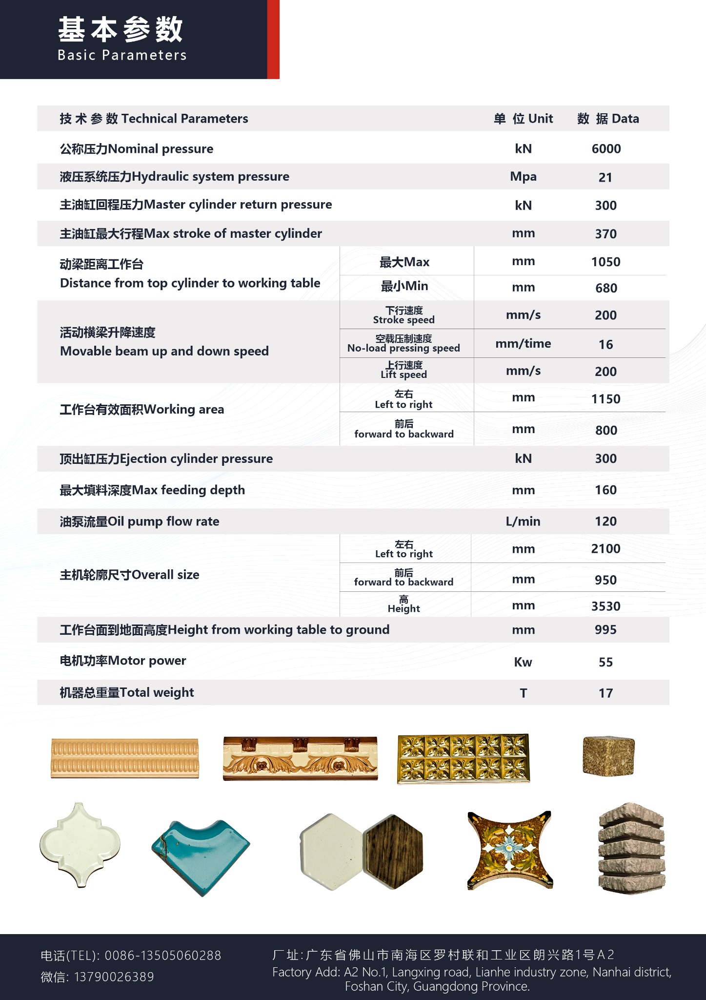

HY-500 · 500T 四柱型
全自动智能快速冲压成型，适用于陶瓷、玻璃、腰线、金属粉末及多品种产品应用。
设备主图按你提供的原图展示；原始产品介绍图和参数图在页面下方。

全自动智能快速冲压成型，适用于陶瓷、玻璃、腰线、金属粉末及多品种产品应用。

全自动一体化设备，可连续作业；压制速度可根据产品要求定制。
以下为根据你提供的参数资料整理的部分关键参数；完整规格请查看下方原始参数图。
保留原始介绍图及参数图，不对你提供的原始资料重新设计。



